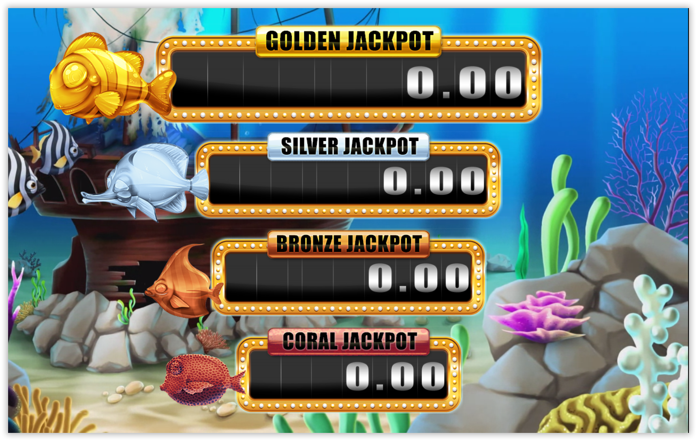
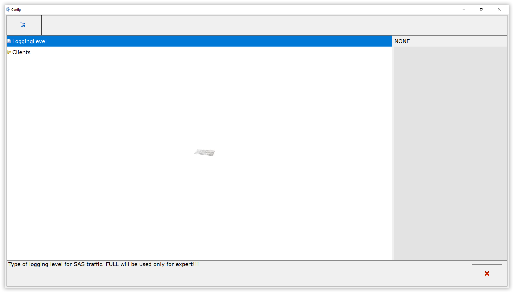
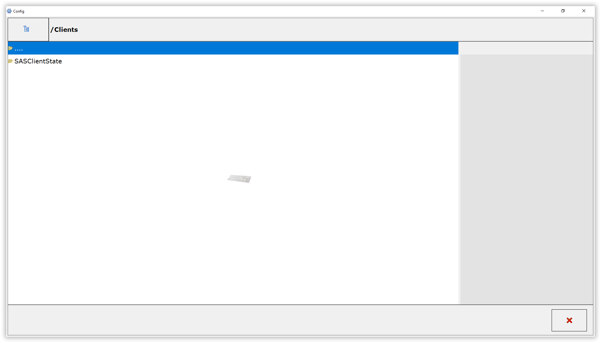
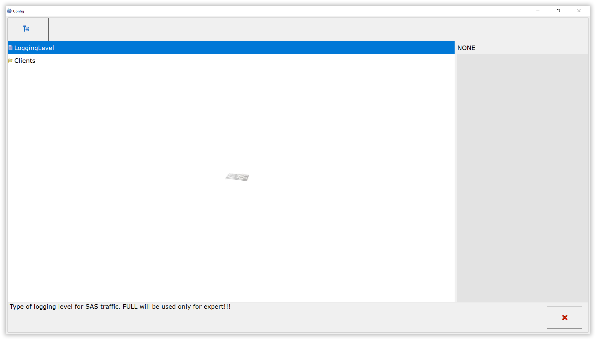
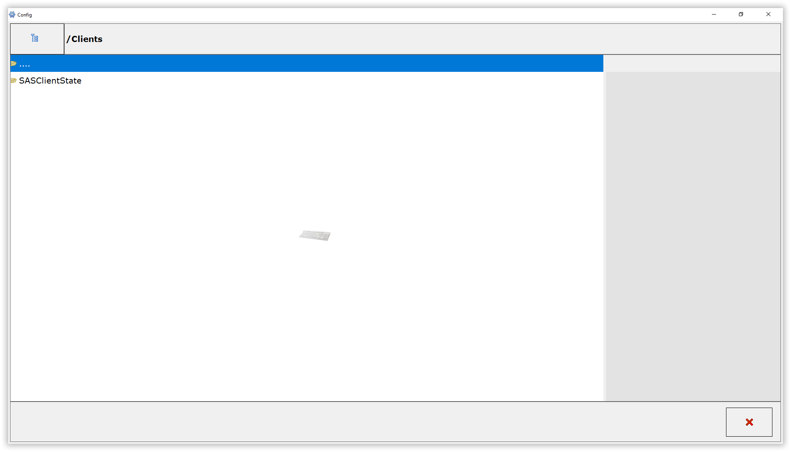

Instalación
Aquí se describen los pasos a seguir para instalar Adventure[WinSCP o Filezilla]
[Usb con Macrium]
[Adventure]
/Adventure_7.1/Adventure7-1_Mex_5c93_1036_Axiomtek_Win10_30012023-00-00.mrimg [Axiomtek]
/Adventure_7.1/GameUpdate.Slot.CountrySelector_V2.0.15_44_MEX.zip
[Jackpot]
USB Booteable con Macrium

Abres Rufus.exe
Seleccionamos la unidad USB:


Damos en START

Seleccionamos Write in ISO Image Mode (Recommended) con OK

Confirmamos el borrado de archivos con OK

Comenzará el proceso....

Esperamos hasta que aparezca READY y Damos en Close

Por último (opcional), copiamos imagen .mrimg del mix en la memoria USB:

Instale la imagen en el SSD del EGM ST3 (Win10) o S3 (Win 8) utilizando Macrium.
Ingreso a la selección de booteo en EGM con la USB


Se recomienda seleccionar el booteo de la USB en UEFI
Ya cargado Macrium
Seleccionamos "Browse for an image file..."

Buscamos la imagen correspondiente a cargar (S3, ST3 o JPController) con extension .mrimg y damos en open

Vamos a la seccion de abajo y damos en "Restore Image"

En la seccion de "Destination" - Damos en "Select a disk to restore to..."

Seleccionamos el disco local

Damos en Next

Luego en Finish

Confirmamos sobre escribir volumen con "continue..."

Esperamos a que termine el proceso

Cerramos todas las ventanas y se reiniciará la terminal
Configuración de Jackpot Controller
Cuando la copia de Macrium haya finalizado, la maquina se reiniciara y la configuración de inicio automático del Jackpot Controller nos guiará a través de los ajustes básicos del Jackpot Controller, los cuales en esta instancia están establecidos en los valores predeterminados.
Ingrese el número de serie del controlador de jackpot (GJP) y presione “OK”. La PC se reiniciará.

Después de reiniciar, se abrirá la ventana "JackpotDisplay Config". Cierre la ventana con la "X" en la esquina inferior derecha.

Se abrirá la ventana del “Aurum currency manipulator”. Presione el botón "Add".

Aparecerá la ventana “Currency list”. Seleccione la moneda deseada y presione el botón “Accept”.

Volverá a la ventana del "Aurum currency manipulator" con una moneda seleccionada que se muestra. Presione el botón "Save and close" para confirmar la selección.

Se abrirá la ventana “Jackpot controller installation”. Cierre la ventana con la "X" en la esquina inferior derecha.

Comenzará a cargar el progresivo
Solicitud de la licencia de Jackpot Controller
Cuando se muestre la pantalla inicial
Presione la tecla INSERT para interrumpir el inicio e ingresa al BiOS Login

Si se hace correctamente, aparecerá una ventana de inicio del BiOS Login. presionamos la tecla BLOCK NUM para habilitar la celda de usuario en verde e Ingrese el nombre de usuario y la contraseña del administrador para ingresar

La licencia correspondiente para el Jackpot Controller. Las licencias deben estar en una carpeta creada en el USB de esta forma: usb:/goldclub/licenses/LicenceXX-XXXXXXXX.xml

Dentro del BiOS, abra la pestaña "Restore" y presione el botón "System update" para abrir la ventana de actualización del sistema.

Seleccione la licencia del controlador de jackpot titulada "GameUpdate.Slot.LicenceFileManager.JP" y presione "OK".

Se abre una ventana de confirmación. Presione “YES”.

Se abre un Administrador de archivos de licencia, que muestra la información de la licencia actual. Pulse el botón “COPY LICENCE”.

Se abre una ventana de confirmación de actualización de licencia. Presione "OK" y reinicie el controlador de jackpot.

Ajustes de configuración del EGM
Cuando la copia de Macrium haya finalizado, la maquina se reiniciara y la configuración de inicio automático del EGM nos guiará a través de los ajustes básicos del EGM, los cuales en esta instancia están establecidos en los valores predeterminados.
Configurar No. de Serie

Configurar llave Dallas (Ingresala 2 veces)

Configurar Denominaciones y darle en Next

Configurar Dallas de la sala y darle en Next

Configurar Billetero

Darle en REMOVE BILL, quitar la seleccion de "Active" y darle APPLY como en la sig. imagen:

Configurar Monedero

Darle en REMOVE Coin, quitar la seleccion de "Active" y darle APPLY como en la sig. imagen:

Validar No. de serie y Lenguaje y dar Close

Cuando se muestre la pantalla de inicio inicial
Acceda a la BiOS de EGM haciendo clic en la esquina superior izquierda de la pantalla de inicio o presionando la tecla [INSERT]

Si se hace correctamente, se le presentará la pantalla de inicio de sesión de BiOS con un código QR y un teclado numérico

Se escanea el código con tu dispositivo móvil y se enviará al correo slot.login@winsysgroup.com (sin asunto)

El servidor responderá con un código de 6 digitos que se ingresaran a la terminal

Si se hace correctamente, yá habrás ingresado correctamente

Vamos a la pestaña de RESTORE

Seleccionamos System update

Seleccionamos el update GameUpdate.Slot.CountrySelector_Adventure_V2.0.15.44_MEX.zip

Confirmamos con YES


Confirmamos con YES

Ingresamos la serie de la terminal

Ingresamos la serie del Jackpot Controller

La terminal se reiniciará haciendo un RAMCLEAR INITIAL SETUP

Por lo que tendrémos que configurar los parametros anteriormente mencionados.
- Configuración de Dallas
- Denominación
- Configuración de dallas de la sala
- Desabilitar los Billeteros
- Desabilitar los Monederos
- Validar Serie y Lenguaje
Solicitud de la licencia de terminal
Cuando se muestre la pantalla inicial
Presione la tecla INSERT para interrumpir el inicio e ingresa al BiOS Login
Si se hace correctamente, aparecerá una ventana de inicio del BiOS Login. presionamos la tecla BLOCK NUM para habilitar la celda de usuario en verde e Ingrese el nombre de usuario y la contraseña del administrador para ingresar
La licencia correspondiente para el Jackpot Controller. Las licencias deben estar en una carpeta creada en el USB de este formato:
- usb:/goldclub/licenses/licence_XX-XXXXXXXX.dll
- usb:/goldclub/licenses/LicenceXX-XXXXXXXX.xml

Dentro del BiOS, abra la pestaña "Restore" y presione el botón "System update" para abrir la ventana de actualización del sistema.

Seleccione la licencia del controlador de jackpot titulada "GameUpdate.Slot.LicenceFileManager.JP" y presione "OK".

Se abre una ventana de confirmación. Presione “YES”.

Se abre un Administrador de archivos de licencia, que muestra la información de la licencia actual. Pulse el botón “COPY LICENCE”.

Se abre una ventana de confirmación de actualización de licencia. Presione "OK" y reinicie el controlador de jackpot.


 


